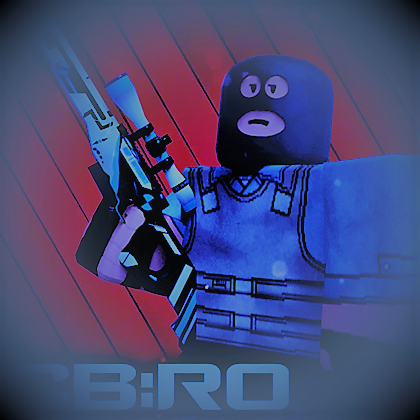
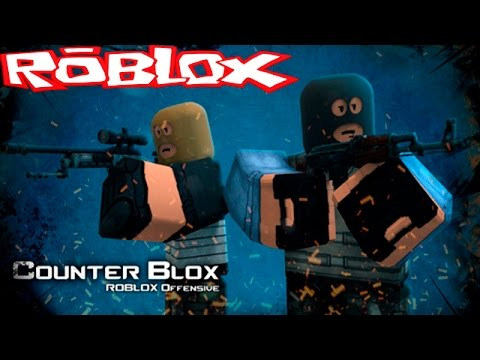
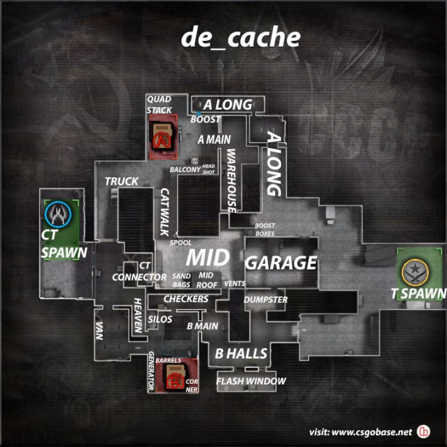
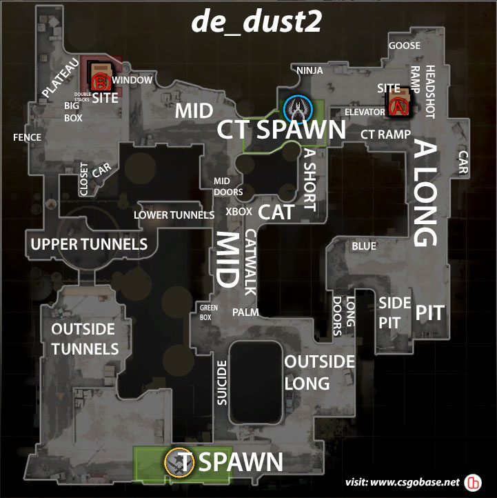
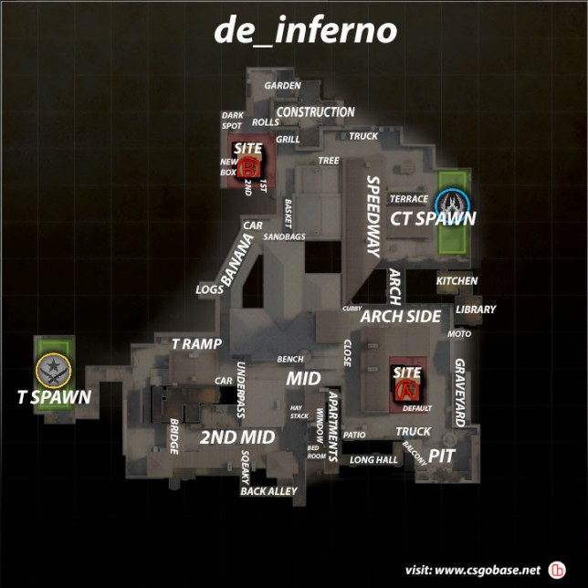

Extra information Gathered from w3schools
Justin(&euro)s original text, non-plagiarized
Counter Blox is a game that is growing in popularity, over the years this game has went from just a couple hundred total players per hour, to a hundreds of thousands! This game is extremely addicting and has gained the attention of famous gaming youtubers such as Pewdiepie and DanDailly. The community are extremely active and to players are all ages.This game may not have as quality graphics as CS GO (Counter Strike Global Offensive), but you will always receive 60fps and extremely low ping due to vast amount of servers available. If your PC is a potato, this game is perfect for you. Also, I forgot to mention that this game is free! It does not require any money spent if you want to rise in the comp scene. You can however, buy skins with robux(online currency) which does require money which you can equip onto your gun. You can also get skins by winning online comp (competitive) games. Skins are really just for show, and does not give you an advantage whatsoever inside the game.This is one of the few games which do not require any money whatsoever to become pro, or to even improve as a player.
 In a competitive game, the winning team has to get 16 rounds first, before the other team. If both teams end up getting 15 rounds each, the game ends in a tie. You will randomly be put into a team in the beginning of the game, Counter Terrorist (CT), or Terrorist (T). Each team consists of 5 players.The objective to winning a round as a Terrorist is to plant the bomb in bomb-site A, or B, and wait out the 40 seconds detonation time while not letting the Counter Terrorists defuse the bomb. Or, eliminate the entire enemy team before planting the time runs out and before planting the bomb. As a Counter Terrorist, you must as a team, eliminate all the terrorists, or wait out the time and not letting them plant the bomb, or defusing the bomb after the Terrorists planted it. There are a variety of maps in CB RO, the most popular competitive maps (maps played in the competitive scene of CB RO), from the most popular playable maps:
  In CB RO, you start off with $800 (€643.29) at the start of round one which you can use to purchase weapons and armour (Press "B" or "E" to Open Shop). I would recommend not buying armour/kevlar ($650) in the first round so that if you lose, you can afford to buy kevlar+helmet the next round, which is ($1000). The helmet is crucial in 1v1 situations because it prevents one shot headshots from every rifle, except the ak-47. Headshots deal the most damage but has the smallest hitbox, so it requires a great amount of skill and aim to perform a headshot, especially at far range. Body shots deal the second most damage, followed by arm shots and leg shots.The pictures above are the callouts of the three main maps in CB RO, which I mentioned before. It would be extremely beneficial to your team and yourself by learning and memorizing those callouts for each specific place, this way, your team can have information on where the enemy, or enemies, are. Grenades are extremely useful in the the game, especially in the pro and comp scenes. Grenades can range from prices from $50-$600 and a person can hold a max of 4 grenades. Grenades are extremely advantageous because it can help you can your team gain position of a bombsite or area, deal damage to the enemy team, or to trick the enemy that your going to a bombsite but rotate to the other. For example, you throw a smoke grenade ($300) between Balcony and Catwalk in de_cache. This smoke will block the enemy members vision of the bombsite from mid (temporarily), and allow your team to gain control of the bombsite and plant the bomb safely. If you throw an incendiary grenade ($600) on quad in de_cache, you will damage any enemies in that general area and have a higher chance of taking them out. The decoy grenade ($50), is extremely helpful for faking a push onto a bombsite or to fake your position as this grenade looks like a flashbang and makes shooting sounds. Another advanced technique you can use in game, is "Crosshair placement". Crosshair placement is where you place your crosshair at the head level of an opponent even if he's not in range or if you do not see him. This will allow you to win battles against the enemy as you don't have to move your mouse as much as they would have to, if their crosshair was not already set up at head level.
Return to the top of the page